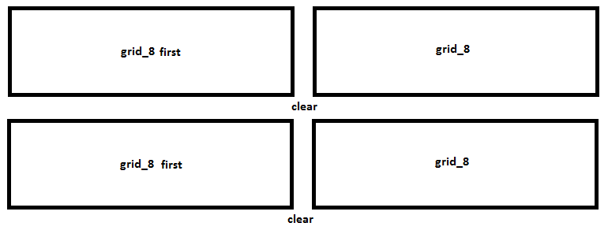

Themio is proud to introduce it's very first full-featured admin panel. The theme changes to almost any color through the clever use of transparent pngs.
All the colors and fonts are easily changable from the styles/config.css file
The theme also comes built-in with almost all the plugins you might need for an admin panel theme. Included are over 3,500+ icons from the fugue iconset, and a further 50 hand-edited menu icons.
The theme follows 960 grid system with 16 coloumns, although it can be easily changed to 12 columns by changing all container_16 classes on the theme to container_12.
An important (and only) difference from the 960.gs to this theme is that we require an extra first class to be added to every first container of a row. For example, a container that has 4 grid_8 widgets in 2 rows will have a structure like so:

Moving on, widgets are structured as such
<div class="grid_8 widget first">
<div class="widget_title clearfix">
<h2><!--widget title--></h2>
</div>
<div class="widget_body">
<div class="widget_options">
<!--widget options paenl -->
</div>
<div class="widget_content">
<!-- actual content -->
</div>
</div>
</div>
The grid_* class with the widget specifies how big the widget should be.
The first class with the widget specifies that this is the first class in the row.
widget_options is a panel for options that can go with the widget. This part is optional.
widget_content gives a 5px padding on all sides of the widget. May not be needed for a full size table. Also optional.
The sidebar version of the theme uses a different header (s_header.php), all other files remain the same. One important addition is also the use of sidemenu.js which manages the accordion effects.
All the links in the #sidemenu>li>a also will need a .clearfix class attached to them.
We are using multiple CSS files for this theme, all linked in the style.css file using
@import(...)
If you would like to add/remove certain CSS files, you can open up style.css and add/remove files from the Structure category.
There is also a IE7.css file included to build support for IE7 using conditional statements.
If you would just like to change the fonts and colors, those are used separately in config.css file.
Chameleon Circuit uses the following jQuery plugins. Although we have displayed some demo features in our theme, a lot more can be found in these pages along with their documentation.
Flot
http://code.google.com/p/flot/
MIT License
Included files:
CLEditor
http://premiumsoftware.net/cleditor/
MIT License
Uploadify
http://www.uploadify.com/
MIT | GPL
Tipsy
http://onehackoranother.com/projects/jquery/tipsy/
MIT License
Datatables
http://www.datatables.net/
GPL v2 license | BSD (3-point) license.
iPhone Style Checkbox
http://awardwinningfjords.com/2009/06/16/iphone-style-checkboxes.html
MIT | GPL
jQuery labelify
http://awardwinningfjords.com/2009/06/16/iphone-style-checkboxes.html
MIT | GPL
jQuery UI Select Menu
http://www.filamentgroup.com/lab/jquery_ui_selectmenu_an_aria_accessible_plugin_for_styling_a_html_select/
MIT | GPL
The theme includes two PSD files located in the psd/ folder.